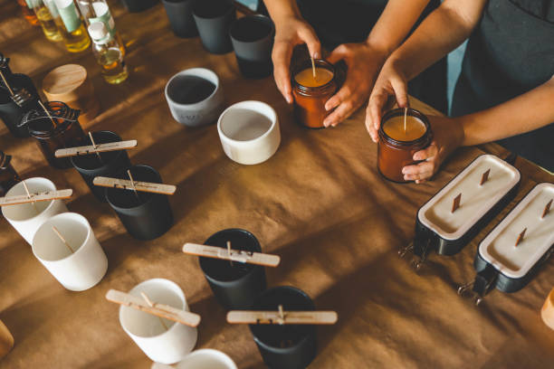

OUR LITTLE BEGINNING
A softer way to
come home.
Leo Candle Co. was born from a love of cozy spaces, meaningful gifts, and the comforting glow of a candle at the end of a long day. We wanted to make candles that feel personal—not just something beautiful on a shelf, but a small invitation to slow down.
Every scent is chosen to set a mood, from bright citrus mornings to quiet lavender evenings. We work in small batches, pour with care, and keep the details simple so the fragrance and the moment can speak for themselves.
Meet the collection →01
Thoughtful ingredients
Soy wax and carefully selected fragrances for a clean, cozy experience.
02
Small-batch care
Each candle is made in small batches, with attention to the little details.
03
Everyday rituals
Scents designed to help make ordinary moments feel a little more special.